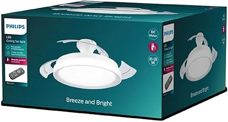
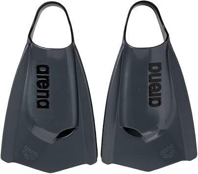

Philips Ventilador de Techo
Combine una luz personalizable con una agradable brisa con el ventilador de techo PHILIPS de aspas retráctiles y LED integrado. Viene equipado con un motor silencioso y también incluye un control remoto. Con aspas transparentes que se retraen cuando no están en uso. Gracias a la configuración de luz SceneSwitch se puede seleccionar 3 temperaturas de color para crear una atmósfera optima sea en un salón o dormitorio.
El ventilador se instala facilmente y no hace nada de ruido. Tiene 6 velocidades de rotación de las aspas y es muy agradable.
ARENA Powerfin Pro II
Las aletas que los nadadores profesionales estaban esperando. Su innovador diseño se basa en un perfil en pendiente y dos surcos hidrodinámicos a lo largo de la parte superior para ayudarte a nadar con una patada potente y mejor control de la brazada. El talón abierto garantiza la mayor flexibilidad de tobillos y por tanto un movimiento más rápido al subir y más enérgico al bajar. Pruébalas y verás cómo mejoras la fase subacuática desde el impulso en el muro. Basta hacer unos minutos de trabajo vertical de piernas al día con las Powerfin Pro II para notar el progreso tanto en la postura del cuerpo como en la técnica de patada.
Sin duda para mi son las mejores aletas que nunca he probado. Siempre he sido muy malo con las aletas cada vez que nos tocaba utilizarlas en los entrenamientos pero desde que las compré he mejorado mucho y tranmite mucha fuerza al agua con cada patada
Proraso Espuma de afeitar

Prepárate para un afeitado sin esfuerzo en cada pasada gracias a la espuma de afeitar hidratante de cuidado personal Proraso, que garantiza una experiencia de afeitado realmente impecable. La rica crema de afeitar se transforma en una espuma revitalizante y aromática que mejora el deslizamiento de la cuchilla y reduce el enrojecimiento. Está hecha a base de estearina vegetal y enriquecida con ingredientes naturales, como el refrescante aceite de eucalipto y el mentol, para limpiar y revitalizar el vello facial. Un producto diseñado para conseguir el afeitado más suave en cualquier tipo de barba.
Desde que descubri la marca de productos para el afeitado de Proraso no hay ninguno de sus producto que me disguste. Son todo de excelente calidad y esta espuma en concreto me dura mucho más que otros botes de gel ya que desperdicio mucho menos